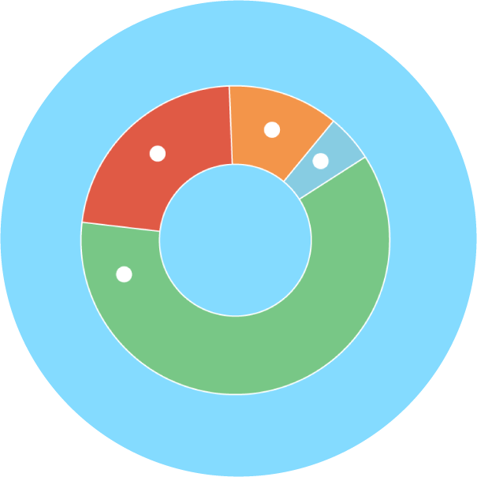

<main>
	<h2>Composición</h2>
	<h3>Comparación de pocos elementos (Gráficos recomendados)</h3>
	<section class="charts">
				<article>
					<a href="grafico-dona.html">
					<h3>Gráfico de dona</h3></a>
				</article>
				<article>
					<a href="grafico-pie.html">
					<h3>Gráfico de Pie</h3></a>
				</article>
	</section>
	<h3>Comparación de muchos elementos (Gráficos recomendados)</h3>
	<section class="charts">
				<article>
					<a href="grafico-area-apilada.html">
					<h3>Gráfico de Área Apilada</h3></a>
				</article>
				<article>
					<a href="grafico-columnas-apiladas.html">
					<h3>Columnas Apiladas</h3></a>
				</article>
				
	</section>

</main>